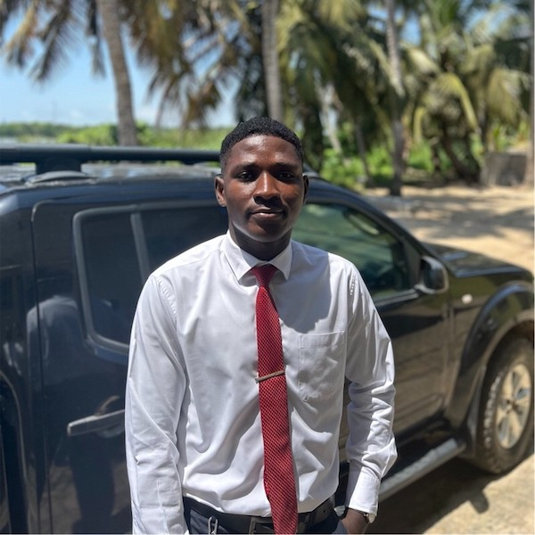

Patrick Ankomah | WDD 130
Hello! My name is Patrick Ankomah and I am from Cape Coast, Ghana. I am a passionate and driven university student currently working towards a Bachelor's degree in Information Technology. My academic journey has been a rewarding exploration of the dynamic world of technology, and I'm eager to contribute my skills and knowledge to the IT industry.